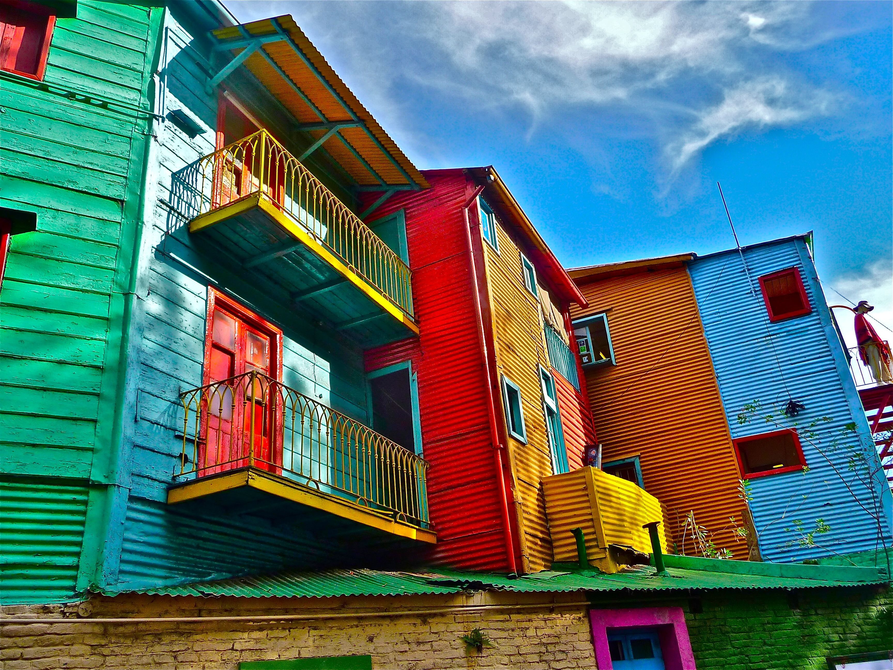
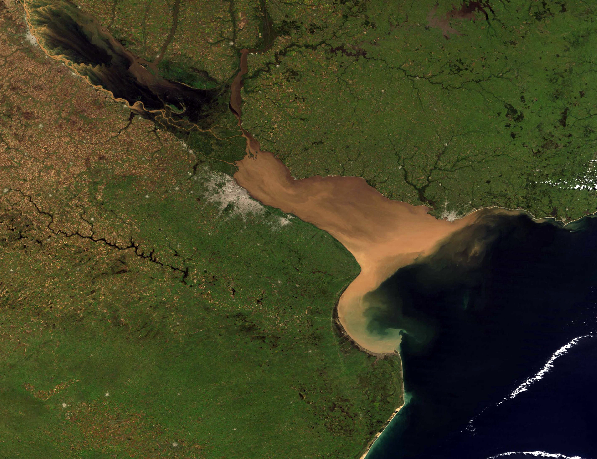
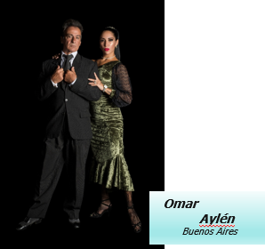
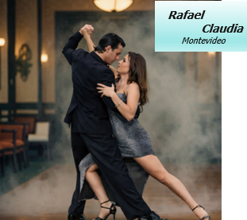
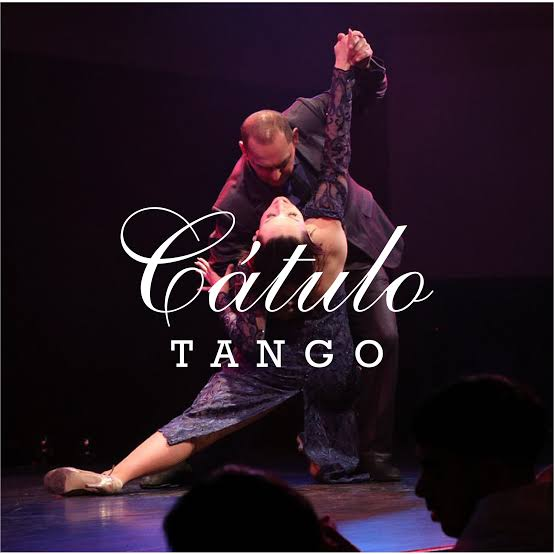
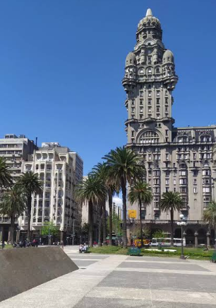
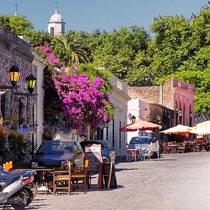

Río de la Plata
De Buenos Aires à Montevideo
- Buenos Aires et le Rio de la Plata
- Montevideo & tango intime
- Ateliers avancés avec maestros
- Milongas emblématiques de BA
- Spectacles d'exception
- Traversée du Río de la Plata
- Colonia del Sacramento


Immersion tango sur les deux rives
Un voyage d'exception au cœur du tango, conçu pour danseurs passionnés. À Buenos Aires, perfectionnez votre style dans des ateliers avancés avec des maestros renommés, découvrez les milongas les plus emblématiques et laissez-vous inspirer par des spectacles d'exception. Puis traversez le Río de la Plata vers Montevideo, où l'atmosphère plus intime révèle un tango raffiné et authentique.
• Buenos Aires
Ateliers, milongas, San Telmo, Recoleta, La Boca, shows
• Pratique intensive
Cours privés et pre-milonga avec maestros locaux
• Montevideo
Tango intime, salons élégants, danseurs locaux
Argentina, Argentina !
Une géographie d'aventure
Les Andes, la Pampa, la Patagonie, la Terre de Feu... Parmi les 32 parcs nationaux, celui d'Ancocagua culmine à 6 900 m. Buenos Aires, capitale du tango, concentre 16 millions d'habitants dans son agglomération – le point de départ idéal pour explorer le berceau du tango.
Les quartiers emblématiques
- San Telmo : Cœur historique, marché, milongas, logement de référence
- Recoleta et Abasto : Le Petit Paris, Cimetière, El Ateneo, Musée Carlos Gardel
- La Boca : Caminito, Bombonera, couleurs et tango populaire
- Puerto Madero / Microcentro : Río de la Plata, modernité, Costanera Sur
- Palermo : Plaza Serrano, nightlife, boutiques et parcs
Plaza de Mayo, Edificio Barolo, Café Tortoni
Les temples du tango à Buenos Aires
Visites programmées : Plaza de Mayo · Puerto Madero · La Boca · La Recoleta · San Telmo · Florida & Lavalle




Cours de tango & soirées show




Cours privés & pré-milongas
Ateliers avancés avec maestros renommés. Perfectionnement du style, technique et improvisation - spécialement conçus pour danseurs passionnés.
Soirée Tango-show
Spectacle d'exception dans un des plus beaux lieux de Buenos Aires. Une immersion dans l'âme du tango portefoîo.
Delta du Tigre
Labyrinthe de canaux
À une heure de Buenos Aires, le Delta du Tigre offre un paysage unique de canaux, d'îles et de maisons sur pilotis.
Navigation, nature et pause loin de la ville - une parenthèse idéale entre deux milongas.
Buenos Aires → Montevideo → Colonia
• Traversée BsAs → Montevideo
Ferry pour rejoindre la rive uruguayenne
• Montevideo
Tango intime, salons élégants, danseurs locaux, centre historique
• Bodegas
Vignobles de Canelones, cépage tannat, dégustations
• Colonia del Sacramento
Ville coloniale UNESCO, charme intemporel
• Retour Colonia → BsAs
Traversée retour vers Buenos Aires
Montevideo & Colonia del Sacramento

Montevideo
Capitale uruguayenne au tango plus intime et raffiné. Salons élégants, danseurs locaux et atmosphère authentique – le pendant parfait de Buenos Aires.
Colonia del Sacramento
Ville coloniale classée UNESCO. Ruelles pavées, phare, remparts et charme intemporel – une étape incontournable sur le Río de la Plata.
Les bodegas uruguayennes


Tannat & terroir
Cépage emblématique de l'Uruguay (originaire de Gascogne). Visites de bodegas à Canelones et Colonia Suiza – dégustations et paysages viticoles.
Avant le départ & sur place
- Passeport : Valide 6 mois après le retour. Pas de vaccins obligatoires.
- Langue & décalage : Espagnol. Décalage - 4 ou - 5 h (pas d'heure d'été en Uruguay).
- Monnaie : Peso argentin (ARS) & peso uruguayen (UYU). Ne pas changer à l'aéroport.
- Inclus : Tous les petits-déjeuners et déjeuners, 3 dîners inclus.
Conseils pratiques
- Chaussures : Bonnes chaussures pour la ville + chaussures de tango pour les milongas
- Électricité : Prises 110 V / 220 V - normes UE également présentes
- Tenue du soir : Tenue vestimentaire correcte pour les milongas et shows
- Wi-Fi & docs : Wi-Fi dans tous les logements. Photocopie / scan du passeport
- Eau & moustiques : Eau potable. République anti-moustique pour zones humides (Tigre)
- Sac léger : Sac à dos pour sorties (appareil photo, eau...)
1ère semaine - Buenos Aires
Florida & Lavalle
Chaussures Flabella
17:30-19:30 Practica
Academia Nac. del Tango
Bar Paulin
9 de Julio
Autour du Congrès
Plaza de Mayo
Av. de Mayo
Edificio Barolo
Café Tortoni
Pizzeria Güerrin
Cimetière Recoleta
El Ateneo
Quartier de l'Abasto
Musée Carlos Gardel
ou Shopping
Rest. del Pilar
Av. Almirante Brown
Casa Amarilla
Caminito
Stade Bombonera
Bodegón Buena Medida
Parc Lezama
Rue Defensa
Marché aux puces
El Zanjón
Casa Minima
El Desnivel
Réserve Costanera Sur
Frégate Sarmiento
Autour des Diques
Restaurant ambulant
Train Mitre Tres Bocas
Balade en bateau-bus
Lo de Celia 18:00 - 1:00
El Hornero
2ème semaine - Montevideo, Colonia & retour
Découverte Soho
Place Cortázar
Pré-milonga 19:30
Salon Marabu
La Nacional
BsAs - Montevideo
Change argent
Vieille Ville
Cabildo
Palacio Salvo
Lo de Bebe
Ligne 706
Place Indépendance
Av. 18 de Julio
Musée du Tango
Rest. quartier
Cathédrale
Cours tango 18:00
Marché du Port
Parque Rodó
Balade Rambla
13:30 Cours tango
Temps libre
Marché Ferrando
18:00 Loc. Minivan
Rest. quartier
(Nueva Helvecia)
10:16-11:31 Traversée
Colonia - BsAs
Despedida groupe
Retour France
Soirées milongas : Pré-milonga 19:30 Gricel · 20:30 Muy Lunes Tango · 22:00 La Catedral
El Beso, El Chamuyo, Joven Tango, La Viruta...
Bon séjour sur les rives du
Buenos Aires · Montevideo · Colonia del Sacramento
RIO DE LA PLATA · LE BERCEAU DU TANGO